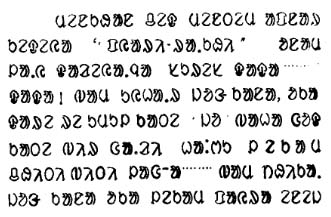
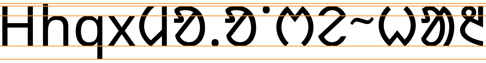
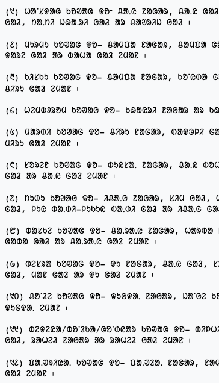
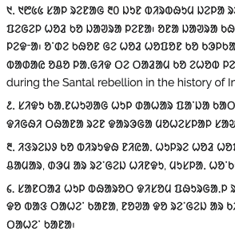
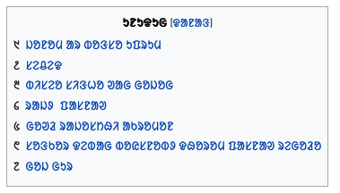

This page brings together basic information about the Ol Chiki script and its use for the Santali language. It aims to provide a brief, descriptive summary of the modern, printed orthography and typographic features, and to advise how to write Santali using Unicode.
The Ol Chiki script was invented by Pandi Raghunath Murmu in the 1920s to provide Santali, spoken by around 6 million people, with a dedicated script, instead of the Latin, Bengali, Devanagari, and Odia that had been and still are used. Ol Chiki is primarily used for the southern dialect of Santali, and has received some official recognition. It has been used for other Munda languages.
The Ol Chiki script is an alphabet. Both consonants and vowels are indicated by letters. See the table to the right for a brief overview of features for the Santali language.
Ol Chiki is mostly a simple and small orthography. There are no combining characters, and no symbols. The script has no case distinction.
Ol Chiki runs left to right in horizontal lines.
Words are separated by spaces.
Santali has 23 consonant letters. Consonants can be aspirated by forming a digraph with a special aspiration letter. ❯ consonants
Ol Chiki has a unique way of handling syllable-final consonants. Four of the voiced stops are typically pronounced unreleased, and unvoiced if they don't appear before a vowel. Where the full value of the letter should be retained, this can be indicated using a modifier called ahad. Another hyphen-like modifier, phaarkaa, applies the reduction before a vowel, when needed (for example for certain verb forms). ❯ finals
There are no special forms for consonant clusters in Santali.
This orthography is an alphabet. Vowels are written using 6 basic vowel letters and 3 digraphs, where an existing vowel letter is followed by a dot. All vowels can be nasalised and lengthened by modifier letters. There are no combining marks. ❯ vowels
This section maps Santali vowel sounds to common graphemes in the Ol Chicki orthography. Click on a grapheme to find other mentions on this page (links appear at the bottom of the page). Click on the character name to see examples and for detailed descriptions of the character(s) shown.
Where the voicing needs to be maintained, ᱽ [U+1C7D OL CHIKI AHAD] is added, eg.
ᱨᱚᱡᱽ
cf. ᱨᱚᱡᱚ
ᱫᱟᱜᱽ
cf. ᱫᱟᱜᱤ
In the opposite situation, where a voiced consonant is used before a vowel but you want to allow the devoicing, put ᱼ [U+1C7C OL CHIKI PHAARKAA] before the vowel.rp,10 For example, see this verb form: ᱢᱮᱱᱟᱜᱼᱟ
Consonant clusters
tbd
Consonant length
tbd
Consonant sounds to characters
This section maps Santali consonant sounds to common graphemes in the Ol Chiki orthography. Click on a grapheme to find other mentions on this page (links appear at the bottom of the page). Click on the character name to see examples and for detailed descriptions of the character(s) shown.
Sounds listed as 'infrequent' are allophones, or sounds used for foreign words, etc.
This section brings together information about the following topics:
writing styles;
cursive text;
context-based shaping;
context-based positioning;
baselines, line height, etc.;
font styles;
case & other character transforms.
Santali text is not cursive (ie. joined up like Arabic), however there is some ligation in hand written text which doesn't occur in printed content.
The orthography has no case distinction, and no special transforms are needed to convert between characters.
Font styling & weight
tbd
Graphemes
Since there are no combining marks or decompositions, grapheme clusters correspond to individual characters.
Question: Should nasalisation or vowel extension dots be handled like combining characters, ie. form a grapheme with the preceding character?
Grapheme clusters
Base
Each base letter is a grapheme cluster, and there are no combining marks to extend them. Other following markers, being letters, are also treated as grapheme clusters, separately from the thing they modify. This includes
ᱸ [U+1C78 OL CHIKI MU TTUDDAG],
ᱹ [U+1C79 OL CHIKI GAAHLAA TTUDDAAG],
ᱻ [U+1C7B OL CHIKI RELAA],
etc.
Click on the text version of this word to see more detail about the composition.
The ASCII full stop is not used, since it creates confusion with other dots in the orthography, therefore ᱾ [U+1C7E OL CHIKI PUNCTUATION MUCAAD] is the main sentence delimiter.rp,11
Santali texts use quotation marks around quotations. Of course, due to keyboard design, quotations may also be surrounded by ASCII double and single quote marks.
Observation: Lines appear to be broken at word boundaries.
Line-edge rules
As in almost all writing systems, certain punctuation characters should not appear at the end or the start of a line. The Unicode line-break properties help applications decide whether a character should appear at the start or end of a line.
The following list gives examples of typical behaviours for some of the characters used in Ol Chiki. Context may affect the behaviour of some of these and other characters.
Click/tap on the characters to show what they are.
“ ‘ ( should not be the last character on a line.
” ’ ) . , ; ! ? । ॥ % should not begin a new line.
ᱹ ᱸ ᱺ ᱻ ᱼ do not create line-break opportunities when surrounded by other letters.
Line breaking should not move a danda or double danda to the beginning of a new line even if they are preceded by a space character.
Text alignment & justification
Observation: All but one of the samples in the Unicode submission document are fully justified. Mostly, the justification is achieved by stretching inter-word spacing, however some words also have the space between characters stretched.

Example of full justification, with the word at the end of the 3rd line from the bottom also showing signs of being stretched.fp,7
Baselines, line height, etc.
Santali uses the so-called 'alphabetic' baseline, which is the same as for Latin and many other scripts.
The height of Ol Chiki letters is very uniform, and there are no combining marks to increase the extension. Nor are there any descenders.
To give an approximate idea, fig_baselines compares Latin and Santali glyphs from the Noto font. The basic height of Santali letters is set to the Latin cap-height. The Santali glyphs don't extend past the Latin glyphs.

Font metrics for Latin text compared with Santali glyphs in the Noto Sans Santali font.
Latin font metrics compared with Santali glyphs in the Nirmala UI font.
Counters, lists, etc.
You can experiment with counter styles using the Counter styles converter. Patterns for using these styles in CSS can be found in Ready-made Counter Styles, and we use the names of those patterns here to refer to the various styles.
Santali Wikipedia pages use numeric styles.
Numeric
The numeric style is decimal-based and uses these digits.
᱑␣᱒␣᱓␣᱔␣᱕␣᱖␣᱗␣᱘␣᱙␣᱐
Examples:
᱑␣᱒␣᱓␣᱔␣᱑᱑␣᱒᱒␣᱓᱓␣᱔᱔␣᱑᱑᱑␣᱒᱒᱒␣᱓᱓᱓␣᱔᱔᱔
Prefixes and suffixes
A range of prefixes and/or suffixes is used in Wikipedia. They include a simple period, parentheses on both sides, and no mark.



Separators for Santali list counters in Wikipedia.
Styling initials
tbd
Page & book layout
This section is for any features that are specific to Ol Chiki and that relate to the following topics:
general page layout & progression;
grids & tables;
notes, footnotes, etc;
forms & user interaction;
page numbering, running headers, etc.